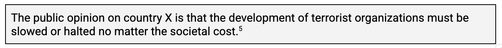
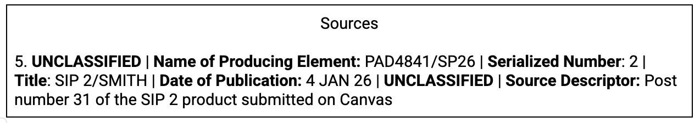

Semester Intelligence Project (SIP) 3 - Written Analysis
Assignment Summary
The student analyst will utilize the information collected in SIP 1 and SIP 2 and compile a written analysis on the assigned topic. The analyst will utilize the background information and collected and coded posts and author a written analysis focused on the specific intelligence questions and topic.
Upon completion of SIP 3, the vast majority of the collection and analysis for the project is concluded.
Instructions
Student analysts will use the posts collected in SIP 2 to complete a written analysis of that information. Using the color codes established in SIP 2, the analyst will develop these into three to five themes. These themes should be introduced at the beginning of the analysis and expanded on in the content of the product. The body of the analysis should include one paragraph per theme, with discussion and arguments supported by the posts in SIP 2, a description of the theme expressed, and the implications of the theme on the assigned topic. Do not include the entire table from SIP 2 in the analysis.
Analysts may cite specific posts utilized in SIP 2. For example, a post was used in SIP 2 that states, “The terrorist organizations must be stopped by any means necessary”. The analyst views this post as emblematic of a point in the final written analysis and includes a direct reference to that post, not simply the theme it represents. That usage requires IC2 203-01 format endnote and superscript citation.
Assuming that this is the 5th source referenced in the body, it should be formatted like this:

Assuming that the analyst SMITH submitted SIP 2 on 4 January 2026 for a class in Spring 2026, and the post referenced was number 31 in that document, the endnote would appear as:

Sources outside of SIP 2 can be utilized to expand or further develop the analysis. Sources cited in SIP 1 may also be utilized. Any sources must be cited per ICD 203/ICS 203-01 using superscript notation and endnotes.
The student analyst must not use first-person language. Statements such as “I found…” should be rephrased as “The analyst discovered…”, etc. This applies to the entire Semester Intelligence Project.
The product should include:
- An introduction that introduces the topic and themes.
- 3-5 body paragraphs that each focus on one of the defined themes (each theme should have its own paragraph).
- A conclusion of what all of this analysis means.
- A list of your search strings and operators as a reference page. These should be the same as those included in SIP 2.
- ICD 203/ICS 203-1 format citation for any specific posts from SIP 2, or sources beyond SIP 2 collected information.
Requirements
- The submission should be between 600-800 words (for undergraduates) or 800-1000 words (for graduates), double-spaced, 12pt, Times New Roman or Calibri font.
- Endnote citations are required if sources outside of SIP 2 are used. All citations must be in ICD 203/ICS 203-1 format.
- The submission will include a title page.
- The submission will include a header and a footer. The header must include the word count of the body of the submission, which does not include any abstract or endnotes. The footer must include a page number and analyst name.
No-Go Criteria
Submissions will be assessed first on the following, before any other rubric criteria. Any failures to meet the foundational requirements will result in an automatic grade of ‘zero’. Further grading of the assignment will not occur.
- If sources beyond SIP 2 are utilized, the submission includes citations in ICD 203/ISD 203-01 format. This must include superscript inline citations and a properly formatted works cited/references list.
- The submission includes properly formatted Search Strings and Operators.
Again, if the submission does not pass the ‘no-go’ criteria, it will receive an automatic grade of ‘zero’.
Feedback
Students will receive feedback upon completion of grading. The primary method of feedback will be the grading rubric and Canvas/LMS comments. Feedback will include required revisions to the work, which must be included in SIP Step 4 for a passing grade. Student analysts should contact the instructor if the grade assigned is unclear.
Rubric
Total points possible: 180